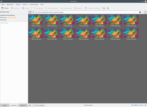
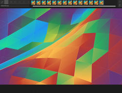

Gwenview
Dieser Artikel wurde für die folgenden Ubuntu-Versionen getestet:
Ubuntu 16.04 Xenial Xerus
Ubuntu 14.04 Trusty Tahr
Zum Verständnis dieses Artikels sind folgende Seiten hilfreich:
Gwenview  ist ein Programm für KDE zum Ansehen von Fotos und Videos, die sich in Verzeichnissen auf der Festplatte oder sonstigen zugreifbaren Medien befinden. Seit Version 2.1 werden JPEGs durch einen speziellen Algorithmus schneller geladen als von den meisten anderen Bildbetrachtern. Von einem 4000x3000-Pixel-Bild, das auf einem 1280x800 Bildschirm dargestellt wird, wird nur jede zweite Zeile und Spalte gelesen (=2000x1500, also nur ein Viertel der Daten) und nur diese dann entsprechend skaliert.
ist ein Programm für KDE zum Ansehen von Fotos und Videos, die sich in Verzeichnissen auf der Festplatte oder sonstigen zugreifbaren Medien befinden. Seit Version 2.1 werden JPEGs durch einen speziellen Algorithmus schneller geladen als von den meisten anderen Bildbetrachtern. Von einem 4000x3000-Pixel-Bild, das auf einem 1280x800 Bildschirm dargestellt wird, wird nur jede zweite Zeile und Spalte gelesen (=2000x1500, also nur ein Viertel der Daten) und nur diese dann entsprechend skaliert.
Im Gegensatz zu den sonst bekannten Programmen zur Verwaltung von Bildern nutzt Gwenview keine interne Datenbank und auch keine eigenen Alben-Verzeichnisse, in die die verwalteten Bilder zuerst hineinkopiert und anschließend mit Schlüsselwörtern katalogisiert werden. Stattdessen wird über einen Datei-Browser auf das vorhandene Dateisystem zugegriffen.
Gwenview eignet sich deshalb besonders gut dafür, das auf der Festplatte oder externen Datenträgern vorhandene Bilderarchiv anzusehen und zu verwalten. Über Stapelverarbeitung können beliebig viele Bilder gleichzeitig bearbeitet werden (Drehen, Größe ändern, in Graustufenbilder umwandeln, Automatisches Drehen nach Exif-Informationen, usw.).
Installation¶
|  |
| Oberfläche von Gwenview |
Gwenview ist in der Standard-Kubuntu-Installation bereits enthalten. Ansonsten muss folgendes Paket installiert [1] werden:
gwenview
 mit apturl
mit apturl
Paketliste zum Kopieren:
sudo apt-get install gwenview
sudo aptitude install gwenview
Zusätzliches Paket ab 15.10¶
Ab der Version 15.10 ist zusätzlich das folgende Paket zu installieren, da sonst die Paketabhängigkeiten nicht erfüllt werden und Gwenview beim Start und während der Benutzung häufig Fehlermeldungen ausgibt.
kinfocenter (ab 14.04 in universe)
mit apturl
Paketliste zum Kopieren:
sudo apt-get install kinfocenter
sudo aptitude install kinfocenter
Möchte man Plugins (z.B. Stapelverarbeitung, Erweiterte Diashow, etc.) innerhalb von Gwenview verwenden, muss ggf. zusätzlich das folgende Paket installiert werden:
kipi-plugins
mit apturl
Paketliste zum Kopieren:
sudo apt-get install kipi-plugins
sudo aptitude install kipi-plugins
Hinweis:
Aufgrund einer Inkompatibilität zwischen Digikam/Kipi-Plugins und Gwenview stehen in Kubuntu 16.04 keine zusätzlichen Plugins zur Verfügung.
Benutzung¶
Im Anschluss kann das Programm gestartet [2] werden. Bei Ubuntu-Varianten mit einem Anwendungsmenü findet man einen Programmstarter unter "Grafik -> Gwenview". Ansonsten kann man den Befehl bzw. das Stichwort gwenview verwenden.
Nach dem Starten erscheint ein Auswahlwerkzeug, mit dem man auf die vorhandenen Verzeichnisse im Dateisystem (Festplatte, CD-ROM, USB-Sticks, SD-Speicherkarten) zugreifen kann. Über Bookmarks kann man schnell zu häufig benutzten Verzeichnissen springen. Auf der rechten Seite des Fensters werden alle im ausgewählten Verzeichnis vorhandenen Grafikdateien als Vorschaubild angezeigt. Die Größe der Vorschaubilder kann durch Halten der Taste STRG und drehen am Mausrad stufenlos variiert werden. Klickt man ein Bild an, erscheint das gewählte Bild links unten im Großformat.
Diashow¶
|  |
| Gwenview im Diashow-Modus |
Automatische Anzeige aller Bilder in einem Verzeichnis (Diashow) wird unter "Ansicht -> Diashow starten" aufgerufen. Möchte man dazu Einstellungen vornehmen, lässt sich das im Vollbildmodus mit dem Werkzeugsymbol tun. Zur Verfügung steht:
Auswahl der Zeit bis zum nächsten Bild
Reihenfolge (normal oder zufällig)
Wiederholung als Endlosschleife möglich
Dieser Modus "normale Diashow" zeigt auch im Verzeichnis enthaltene Videos gleich mit an (siehe unten).
Unter "Module -> Werkzeuge -> Erweiterte Diashow" können die anzuzeigenden Bilder ausgewählt werden, Übergangseffekte verschiedener Art (Open-GL-Übergänge oder einfachere) hinzugefügt werden, der Dateiname ein- oder ausgeblendet oder ein Zähler hinzugefügt werden.
Hinweis:
Die "Erweiterte Diashow" dreht die Bilder NICHT automatisch nach Exif-Informationen! Die Bilder müssen daher VORHER erst gedreht werden.
Videos werden NICHT angezeigt
Automatisches Drehen¶
Übliche Digitalkameras speichern Zusatzinformationen (Zeit, Datum, Auflösung, Belichtungszeit, Blende, usw.) im sogenannten Exif-Format in der Bilddatei ab. Die meisten Kameras haben einen Lagesensor, der erkennt, wenn ein Bild im Hochformat gemacht wird. Das entsprechende Bild kann nun entweder entsprechend anders in der Kamera kodiert werden (Zeilen und Spalten der JPG-Datei werden getauscht), oder aber, was technisch einfacher ist, das eigentliche Bild wird stets im Querformat gespeichert, und die Hochformat-Orientierung wird in den Exif-Daten vermerkt. Beide Verfahren sind korrekt, und die Orientierung in den Exif-Daten wird von den meisten Bildbetrachtern berücksichtigt; somit erscheinen Hochformatbilder meist auch im Hochformat auf dem Bildschirm.
In einigen, genauer: zunehmend selteneren, Fällen ist es notwendig, die JPG-Datei tatsächlich zu drehen, nämlich wenn ein verwendetes Programm die Exif-Information "orientation" ignoriert. Das Drehen einer JPG-Datei ist verlustfrei möglich, auf der Kommandozeile kann man dazu JHead, Exiv2 oder ExifTool verwenden, wobei man anschließend natürlich das "orientation tag" löschen muss, damit die Orientierungsinformationen wieder konsistent sind.
Mit Gwenview lassen sich nun sehr schnell und komfortabel alle Aufnahmen automatisch "richtig" drehen. Hierzu markiert man alle gewünschten Bilddateien und wählt im Menü "Module -> Bilder -> Auto-Rotate using Exif information".
Bildbearbeitung¶
Im Normalmodus gibt es unter dem Menüpunkt "Bearbeiten" folgenden Möglichkeiten:
Drehen (im/gegen den Uhrzeigersinn)
Spiegeln (waagerecht/horizontal)
Größe ändern
Zuschneiden
Rote Augen korrigieren
Weitere Möglichkeiten der Bildbearbeitung aus dem Programm heraus finden sich unter dem Menüpunkt "Module -> Bilder ":
Metadaten bearbeiten (Exif, IPTC, XMP, Beschriftungen)
Automatisches Drehen
Schwarz-Weiß konvertieren
Bild drucken
Bild per Mail versenden
In diesem Menü gibt es noch die Funktionen:
Werkzeuge
erweiterte Diashow
Kalender erstellen
Blend bracketed images
OpenGL-Bildbetrachter
Rohbild-Konvertierung
Importieren (SmugMug, PicasaWeb, Facebook, vom Scanner oder Fremdrechner)
Exportieren (SmugMug, Gallerie, Fremdrechner, IPod, PicasaWeb, Flash, Facebook, Flickr, 23, Zoomr, Shwub, Piwigo, HTML)
Stapelverarbeitung (s. unten)
Stapelverarbeitung¶
Besonders hilfreich ist die Möglichkeit, viele Bilder auf einmal zu bearbeiten (Größe ändern, Bilder neu einfärben, Umbenennen, Filter anwenden, Rahmen erzeugen, usw.). Die Funktionen zur Stapelverarbeitung findet man im Menü unter "Module -> Stapelverarbeitung".
Vollbildfunktion¶
Im Vollbildmodus (Tastenkombination Strg + ⇧ + F ) können die angezeigten Bilder entweder nach links oder rechts gedreht werden (Tastenkombination ⇧ + L / ⇧ + R ). Mit dem Werkzeugsymbol "Vollbildmodus einrichten" werden Einstellungen für eine Diashow vorgenommen, z.B. zeitliche Verzögerung, zufällig oder Endlosschleife. Ferner kann hier die Darstellung der Metadaten den Wünschen angepasst werden.
Videos mit Gwenview anzeigen¶
Gwenview eignet sich hervorragend dazu, eine Sammlung aus Bildern und Videoclips anzuzeigen, dafür greift Gwenview auf Phonon zurück. Voraussetzung ist lediglich, dass die notwendigen Codecs installiert sind.
phonon-backend-gstreamer
gstreamer1.0-libav
mit apturl
Paketliste zum Kopieren:
sudo apt-get install phonon-backend-gstreamer gstreamer1.0-libav
sudo aptitude install phonon-backend-gstreamer gstreamer1.0-libav
GStreamer kann man mit zusätzlichen Codecs nachrüsten. Damit wird es möglich, noch mehr verschiedene Videoformate abzuspielen. Mehr dazu im Artikel Codecs. Da dies auch im Vollbildmodus funktioniert, eignet es sich für multimediale Präsentationen als Alternative zu OpenImpress oder Powerpoint.
Einstellungen¶
Unter "Einstellungen -> Kurzbefehle festlegen" kann festgelegt werden, mit welcher Taste welche Aktion durchgeführt werden soll. Das ist insbesondere dann von Bedeutung, wenn man das Programm mit einer Fernbedienung oder Funkmaus nutzen möchte.

 Übersichtsartikel
Übersichtsartikel- Erstellt mit Inyoka
-
 2004 – 2017 ubuntuusers.de • Einige Rechte vorbehalten
2004 – 2017 ubuntuusers.de • Einige Rechte vorbehalten
Lizenz • Kontakt • Datenschutz • Impressum • Serverstatus -
Serverhousing gespendet von